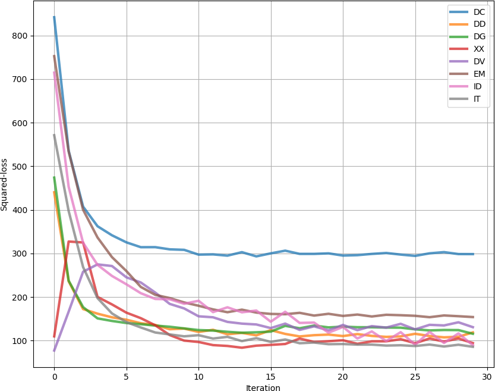

SFC
The Superposition of Functional Contours (SFC) model is based on neural network contour generators (CGs), each responsible for encoding one linguistic function. Four rhythmic unit (RU) position ramps are input to the CGs that describe the absolute and relative position of the current RU within the function’s scope. The CGs then output the prosodic contour for that RU, as shown in Fig. 1.

Fig. 1 — The SFC contour generators generate the prosodic contours (here three \(f_0\) targets for the and one duration coefficient) one rhythmic unit at a time based on its position within the function’s scope.
In the standard SFC, and in all of the ProsoDeep models, the prosody includes a number of pitch targets spread across the vowel nucleus of the RU, and a duration expansion coefficient for the whole RU [sfc]. The prosody contour of the utterance is then obtained by overlapping and adding these elementary contours. CGs are trained using an analysis-by-synthesis loop that distributes the error at each iteration, shown in Fig. 2.

Fig. 2 — The SFC analysis-by-synthesis loop used to train the contour generators by redistributing the error for each RU among the contributing CGs. Taken from [sfc].
PySFC
PySFC is a Python implementation of the SFC model that was created with two goals: i) to make the SFC more accessible to the scientific community, and ii) to serve as a foundation for future improvements of the prosody model. The PySFC also implements a minimum set of tools necessary to make the system self-contained and fully functional [code].
Here are a few example plots with PySFC just to show case what it can do. The plotted files are included as examples in the examples/ directory. All of them are taken from our PySFC paper [pysfc].


Fig. 2 — Example Praat annotation (top) of the functions withing the French utterance: Son bagou pourrait faciliter la communauté. and PySFC decomposition into constituent functional contours (bottom): declaration (DC), dependency to the left/right (DG/DD), and cliticisation (XX, DV).

Fig. 3 — Example PySFC intonation decomposition for the Chinese utterance: Tā men céng zài jī cāng nèi géi lǔ kè diǎn gē hè shēng rì, céng ná zhē shuí guǒ nái fěn qù tàn wàng yóu tā men zhuǎn sòng qù yī yuàn de lǔ kè chǎn fù. into constituent functional contours: declaration (DC), tones (C0-4), word boundaries (WB), and independence (ID).

Fig. 4 — Example PySFC expansion for (left to right): the assertion (DC), question (QS), incredulous question (DI), and obviousness (EV) attitudes contours, numbers next to the plots show the number of occurences of that scope in the data.

Fig. 5 — Example PySFC expansion in left and right context for the dependency to the left (DG) functional contour, numbers next to the plots show the number of occurences of that scope in the data.
Fig. 6 — Example PySFC plots of \(f_0\) reconstruction losses for all NNCGs for attitude DC per iteration for French.
Tone function scope
We validated the usability of the PySFC through confirming the established carry-over phenomenon present in Chinese tones [pysfc-tones]. We observed that including the succeeding rhythmic unit within the tonal function scope, makes a statistically significant impact on modelling performance. On the other hand, including the preceding unit, does not. The carry-over effect can clearly be seen in the juxtaposition of the four tonal function contours in Fig. 7.

Fig. 7 — A superposition plot of the \(f_0\) contours generated by the four tone CGs using the double scope with both neighbouring syllables. Taken from [pysfc-tones]